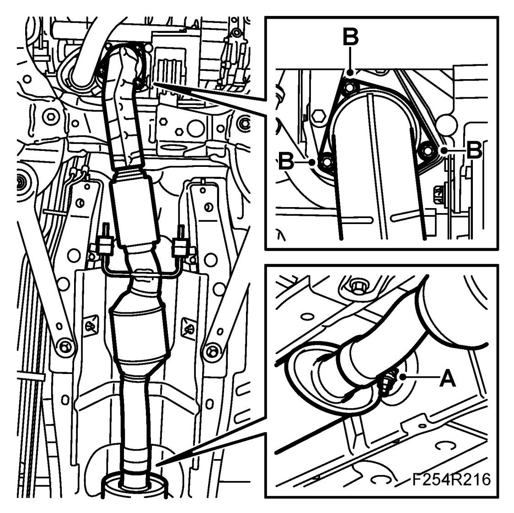
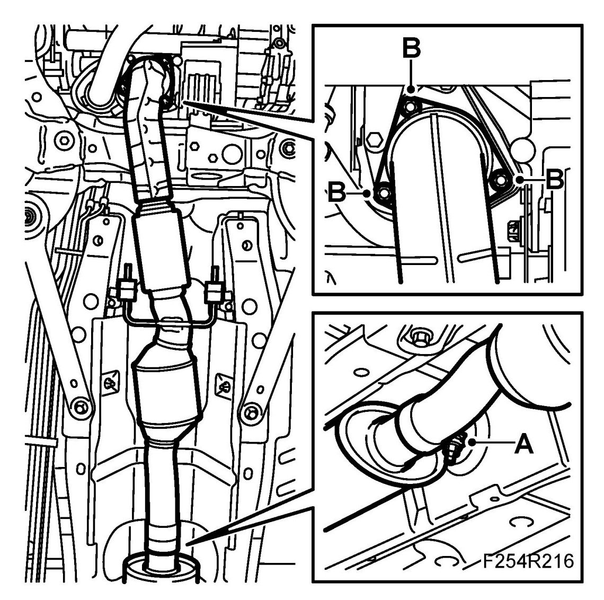

Rear Catalytic Converter, B207
Rear Catalytic Converter, B207 US/CA
To remove
1. Raise the car.
2. Undo the nuts on the exhaust pipe clamp (A).
IMPORTANT: Be careful with the flexible part. It must not be bent by more than 5 degrees.

3. Remove the nuts (B) from the front catalytic converter and remove the front pipe complete with catalytic converter.
To fit
1. Fit the rear catalytic converter to the front silencer and the rubber mounting. Replace the rubber mountings as necessary.
2. Fit the flange with new gasket and new nuts (B) to the front catalytic converter.
Tightening torque 30 Nm (22 lbf ft)

3. Tighten the clamp nut (A).
Tightening torque 40 Nm (30 lbf ft).
4. Lower the car.
5. Connect exhaust hoses and start the engine. Check that the exhaust system does not leak.